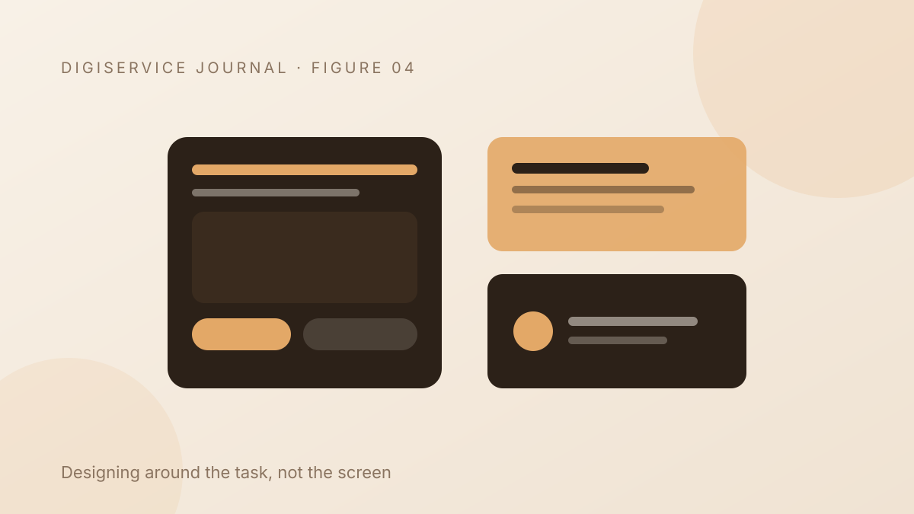

In today’s digital landscape, a website’s success hinges not only on its content but significantly on its User Experience (UX) and User Interface (UI) design. For businesses in Pakistan aiming to establish a strong online presence, understanding and implementing effective UX/UI design principles is crucial.
Understanding UX and UI Design
Understanding UX and UI design is fundamental to creating digital products that truly resonate with users. Both disciplines, while distinct, are closely intertwined and essential for delivering a seamless and engaging online experience. UX design (User Experience design) focuses on the overall journey a user takes when interacting with a product, aiming to make that interaction as smooth, efficient, and satisfying as possible. Meanwhile, UI design (User Interface design) centers on the visual elements and interactive components that users see and engage with, such as buttons, typography, colors, and layouts.
Successful digital solutions depend on the harmony between UX and UI design. Good UX design involves understanding the users’ needs through research, mapping out user flows, and designing functional wireframes that facilitate easy navigation. In contrast, UI design brings those wireframes to life with attractive visuals and interactive elements that guide users intuitively. The combination of effective UX and UI design ensures that not only is the product functional and user-friendly, but it is also visually compelling and enjoyable to use.
Moreover, modern UX and UI design practices emphasize collaboration between designers, developers, and stakeholders to continuously refine and improve digital experiences. Tools like Figma enable teams to work on UX and UI design simultaneously, allowing for real-time feedback and faster iterations. Ultimately, mastering UX and UI design leads to digital products that satisfy user expectations, reduce friction, and drive business success by increasing engagement and conversion rates.

The Need for UX and UI Design Overlap
The overlap between UX (User Experience) and UI (User Interface) design is essential because both disciplines work hand-in-hand to create digital products that are not only visually appealing but also easy and enjoyable to use. Without this overlap, a product might look great (strong UI) but be confusing or frustrating to navigate (poor UX), or it might function well but fail to engage users due to unattractive or inconsistent visuals.
This overlap ensures:
- Seamless Interaction: UI elements are designed with user behavior in mind, making interfaces intuitive and natural to use.
- Consistent User Journey: UX defines the flow and usability, while UI provides clear visual cues and feedback, helping users move smoothly through the product.
- Better Communication: When UX and UI designers collaborate closely, they can align goals, share insights, and avoid misinterpretations that lead to design flaws.
- Efficient Problem Solving: Combining UX’s focus on functionality and UI’s emphasis on aesthetics leads to balanced solutions that satisfy both user needs and business objectives.
4 Key UI Design Considerations :
1. Simplicity
Simplicity is fundamental in UI design because it helps users focus on their tasks without unnecessary distractions. A simple interface avoids clutter by using clear layouts, minimal elements, and intuitive navigation. This means prioritizing essential features and content, using whitespace effectively, and avoiding overly complex menus or options. When users can find what they need quickly and perform actions effortlessly, their overall experience improves significantly, reducing frustration and increasing satisfaction.
2. Consistency
Consistency ensures that the design elements such as colors, typography, buttons, icons, and layout patterns remain uniform throughout the interface. This creates a sense of familiarity and predictability, helping users learn the system faster and navigate confidently. Consistent UI also strengthens brand identity by reflecting a coherent visual style. Inconsistent design can confuse users and make the product feel unprofessional or unreliable, so adhering to style guides and design systems is crucial.
3. Accessibility
Accessibility means designing interfaces that everyone can use, including people with disabilities. This involves following standards like the Web Content Accessibility Guidelines (WCAG), which recommend features such as sufficient color contrast, scalable text, keyboard navigability, screen reader support, and clear labels. Accessible design not only expands your audience but also improves usability for all users, including those on different devices or in varying environments. It’s about creating inclusive experiences that do not exclude anyone.
4. Feedback
Providing clear and immediate feedback is vital for keeping users informed about the results of their actions. This can include visual cues like button animations, loading indicators, confirmation messages, error alerts, or sound notifications. Feedback reassures users that the system is responsive and helps them understand what is happening or what needs to be corrected. Without proper feedback, users may feel lost or frustrated, unsure if their inputs were registered or if an action succeeded.
4 Key UX Design Considerations:
1. User Research and Understanding
A successful user experience (UX) starts with deep knowledge of the target users — their needs, goals, behaviors, and pain points. Conducting thorough user research through interviews, surveys, and usability testing helps designers create solutions that truly address user problems. Understanding users ensures the design is relevant, intuitive, and satisfying, rather than based on assumptions or personal preferences.
2. Usability
Usability refers to how easy and efficient it is for users to accomplish their goals within a product or website. A usable design minimizes the learning curve, avoids unnecessary complexity, and provides clear navigation paths. It includes factors such as intuitive workflows, logical information architecture, straightforward labeling, and error prevention or recovery. The easier it is for users to use the product without frustration, the better their overall experience.
3. Accessibility
Accessibility in UX means ensuring that products can be used by people of all abilities and disabilities. This includes designing for screen readers, providing keyboard navigation, offering adjustable text sizes, and ensuring sufficient color contrast. Accessible UX not only benefits users with disabilities but also improves usability for everyone by making interfaces more flexible and adaptable to different contexts and devices.
4. Consistency and Feedback
Consistency in UX means maintaining uniformity across different pages and sections regarding layout, interaction patterns, and visual style. This helps users build familiarity and predict how things work, reducing cognitive load. Feedback involves giving users clear responses to their actions — such as confirmation messages, progress indicators, or error alerts — so they know what is happening. Together, consistency and feedback build trust and guide users smoothly through their journey.
Importance of UX/UI Design in Website Success
1. Enhances User Engagement
A well-designed UI captures users’ attention, while intuitive UX keeps them engaged. For instance, clear navigation menus and responsive design elements encourage users to explore more pages, reducing bounce rates.
2. Improves Accessibility
Incorporating accessibility features, such as readable fonts and keyboard navigation, ensures that users with disabilities can navigate the website effectively, broadening your audience reach.
3. Boosts Conversion Rates
Effective UX/UI design guides users towards desired actions, such as making a purchase or filling out a contact form. Strategically placed call-to-action buttons and streamlined checkout processes can significantly increase conversion rates.DiroxLinkedIn
4. Builds Brand Credibility
Consistent UI elements and a seamless UX convey professionalism and reliability, fostering trust among users. A credible website encourages repeat visits and customer loyalty.
5. Enhances SEO Performance
Search engines favor websites that offer excellent user experiences. Factors like mobile responsiveness, fast loading times, and low bounce rates contribute to higher search rankings.
Key Elements of Effective UX/UI Design
- Responsive Design: Ensures the website functions well on various devices, including smartphones and tablets.
- Intuitive Navigation: Simplifies the user journey, making it easy to find information.
- Consistent Branding: Maintains uniform colors, fonts, and styles across all pages.
- Fast Load Times: Optimizes images and code to reduce page loading times.
- Accessible Content: Provides alt text for images and uses readable fonts and colors.
Implementing UX/UI design Best Practices
- User Research: Conduct surveys and usability tests to understand user needs and preferences.
- Wireframing and Prototyping: Create visual representations of the website layout before development.
- Continuous Testing: Regularly test the website’s functionality and design elements to identify areas for improvement.
- Feedback Integration: Encourage user feedback and make necessary adjustments to enhance the user experience.
Where Do UX And UI Overlap?
UX (User Experience) and UI (User Interface) overlap in the way they work together to create a seamless and enjoyable interaction between users and digital products. While UX focuses on the overall feel, usability, and flow of the experience, UI concentrates on the look and interactive elements users engage with.
The overlap happens in areas such as:
- Designing interactive elements: Both UX and UI collaborate to ensure buttons, menus, and forms are not only visually appealing but also easy and intuitive to use.
- User flow and navigation: UI designers create clear visual cues and layouts, while UX designers ensure the navigation meets user needs and expectations.
- Consistency and feedback: Both disciplines work together to maintain consistent design patterns and provide feedback (like loading indicators or error messages) that guide users smoothly.
Enhance UI and UX Design with Figma
Figma is a powerful, cloud-based design tool that enables designers to create, prototype, and collaborate on UI and UX design projects seamlessly. With its intuitive interface and real-time collaboration features, Figma helps teams iterate faster and make informed design decisions.
For UI design, Figma offers robust vector editing, reusable components, and style libraries, allowing designers to build consistent and visually appealing interfaces efficiently. Its responsive design features enable the creation of adaptable layouts for different screen sizes.
On the UX side, Figma’s prototyping tools let designers create interactive user flows and simulate real user experiences without writing code. Usability testing and feedback can be incorporated early in the design process, helping identify pain points and improve navigation and functionality.
Moreover, Figma’s collaborative environment allows designers, developers, and stakeholders to work together in real time, streamlining communication and ensuring designs align with user needs and business goals. This integration of UI and UX design workflows makes Figma an essential tool for creating engaging, user-centered digital products.
Conclusion
Investing in UX/UI design is not just about aesthetics; it’s about creating a functional, accessible, and engaging platform that meets user needs and drives business goals. For Pakistani businesses, prioritizing UX/UI design can lead to increased customer satisfaction, higher conversion rates, and a stronger online presence.
In conclusion, UX and UI design are both vital components in creating successful digital products. The synergy between UX and UI design ensures that users not only find a website or app visually appealing but also easy to use and navigate. Without strong UX and UI design, a product risks failing to engage its audience or meet their needs effectively.
Investing in quality UX and UI design improves user satisfaction, boosts brand credibility, and drives business growth. As technology evolves, the importance of UX and UI design will continue to grow, making it essential for designers to master both areas. Ultimately, the best digital experiences come from a balanced integration of UX and UI design, where user needs and aesthetics work together seamlessly to deliver value. Prioritizing UX and UI design helps create products that stand out in competitive markets and foster lasting user loyalty.
For professional assistance in optimizing your website’s UX/UI design, explore our Home Page, review our Pricing options, or view our Project Portfolio to see our successful implementations.